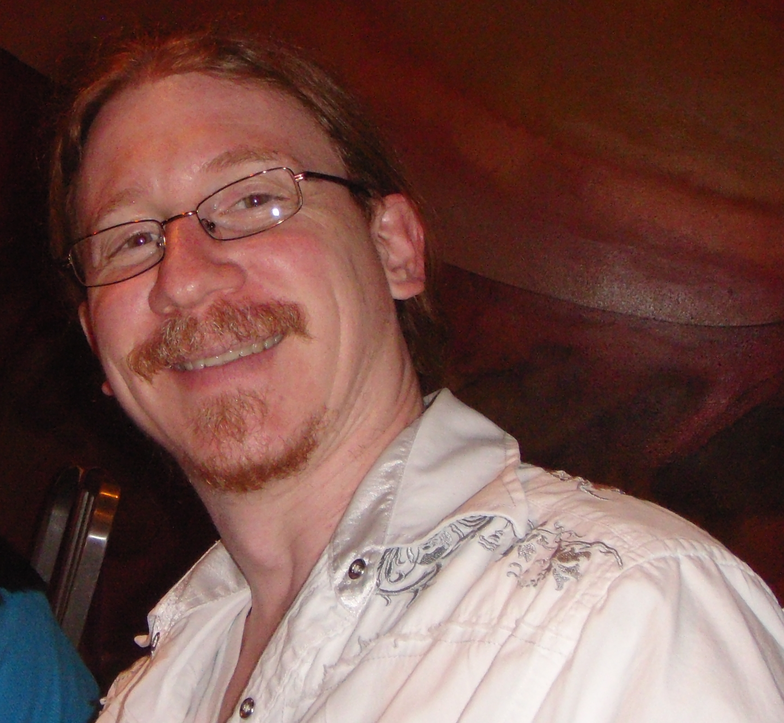

Why Did We Make This Game?
Class: CS 113 / INF 125 – Computer Game Development
This game was built as a quarter-long project for our Informatics 125 class at UC Irvine. Throughout this course we learned not just how to create games, but how to create interesting and engaging games. We applied the lessons taught to us during lecture to our game, in an attempt to make a game that won't just get us an A, but will actually be an enjoyable experience.
Professor: Darren Denenberg
Maximum Brown Nose Mode Engage!
Dr. Darren Denenberg is an excellent professor! His lectures on interesting and relevant gaming topics are always engaging which is a nice change of pace for most students at UCI. He expresses serious passion for games, and has a strong, insightful knowledge about the game industry over the years. Darren Denenberg is a hero in the gaming community, doing everything in his power to save the world from yet another Candy Crush clone.
Game Showcase
- Date: December 6th 2016
- Time: 1:00 – 3:00 PM
- Location: Donald Bren Hall 5011 and 5th floor lobby